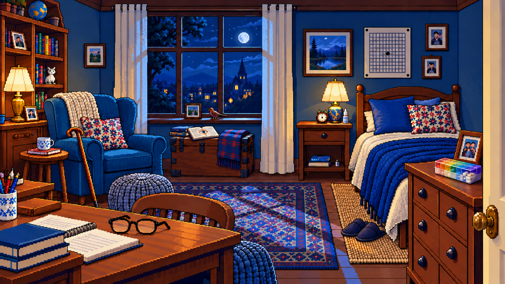
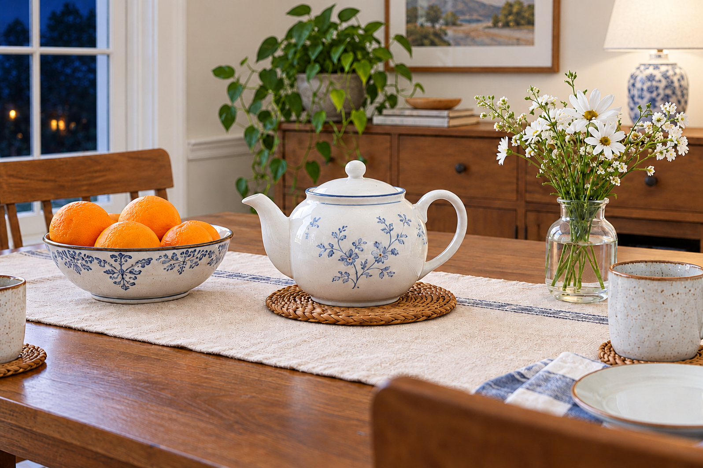
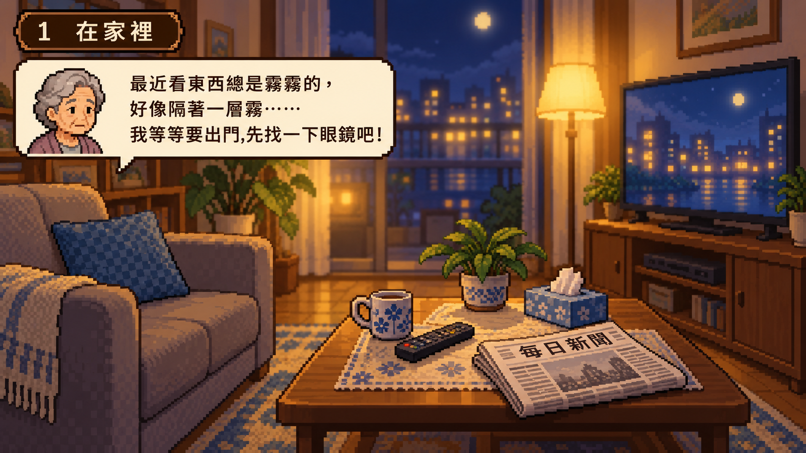
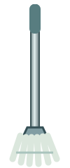
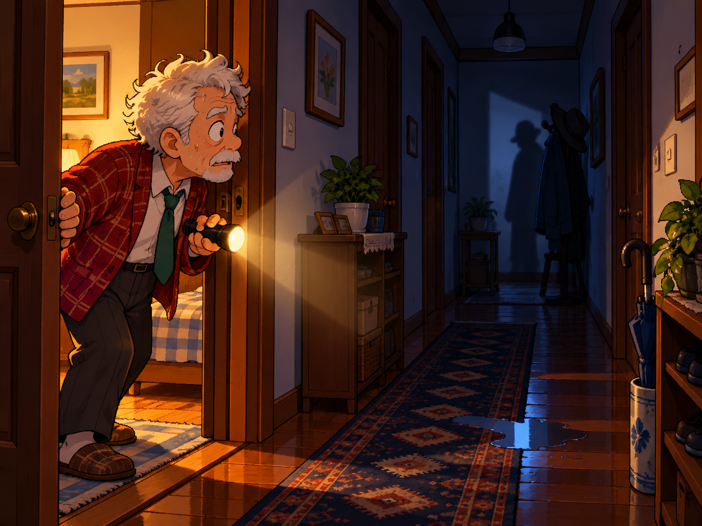

調整閱讀距離，讓文字清楚又舒服
提示：記住這句話

留意每兩秒亮起一次的物品，點擊即可調查。
方格表線索

玩家判斷
根據你的觀察
選出你剛才看到的變化。
線索解讀
一次看一個重點
衛教內容參考眼科衛教資料；遊戲體驗不能代替醫師診斷。
學習評量
點選你認為可能是黃斑部病變視野的照片。
目前選取 0 張老花眼鏡線索
玩家判斷
根據你的觀察
學習重點
一次看一個重點
需要配鏡時，可請眼科醫師或驗光人員評估。
調整閱讀距離，讓文字清楚又舒服
提示：記住這句話
書本距離太近，文字模糊。
眼藥水線索
玩家判斷
根據你的觀察
學習重點
一次看一個重點
如果視力變化已影響日常生活，建議就醫檢查。
學習評量

評量完成
你已經觀察過霧感、眩光，以及日常生活中較容易忽略的細節。
視力生活挑戰


藥盒｜醫療資源任務
資源查詢
區域搜尋
讓路徑經過指定條件，再連到「目標」。
路徑接通
這裡呈現的是你提供的 ICOPE 評估單位資料。若要處理特定眼疾，仍需向院所確認科別、服務與看診時間。
三個任務全部完成
接著看看實際有哪些醫療資源，以及可以查到哪些資訊。
這是 ICOPE 評估單位資料。若要處理特定眼疾，仍需向院所確認科別與服務。